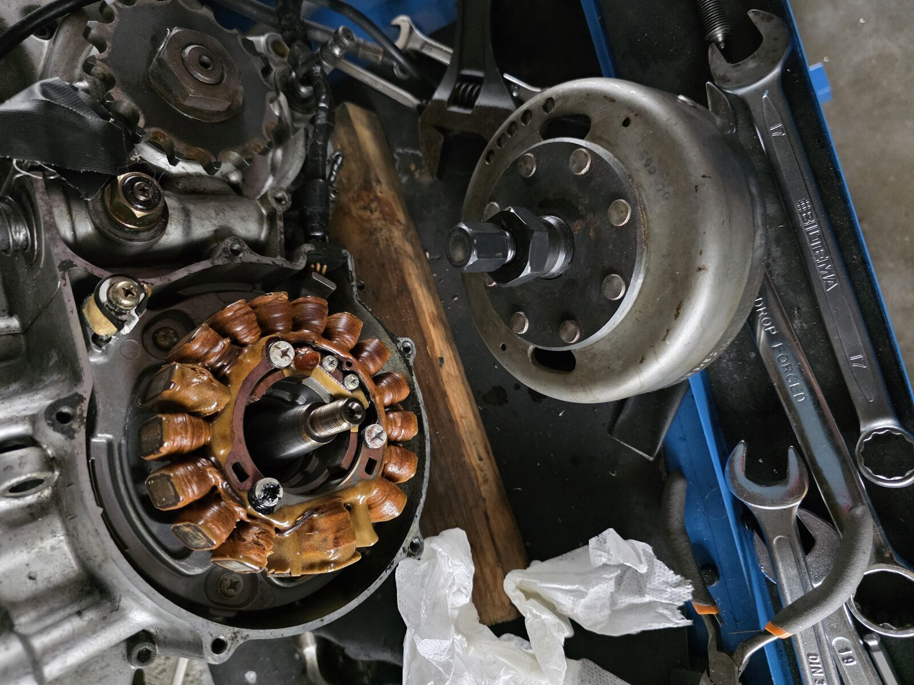
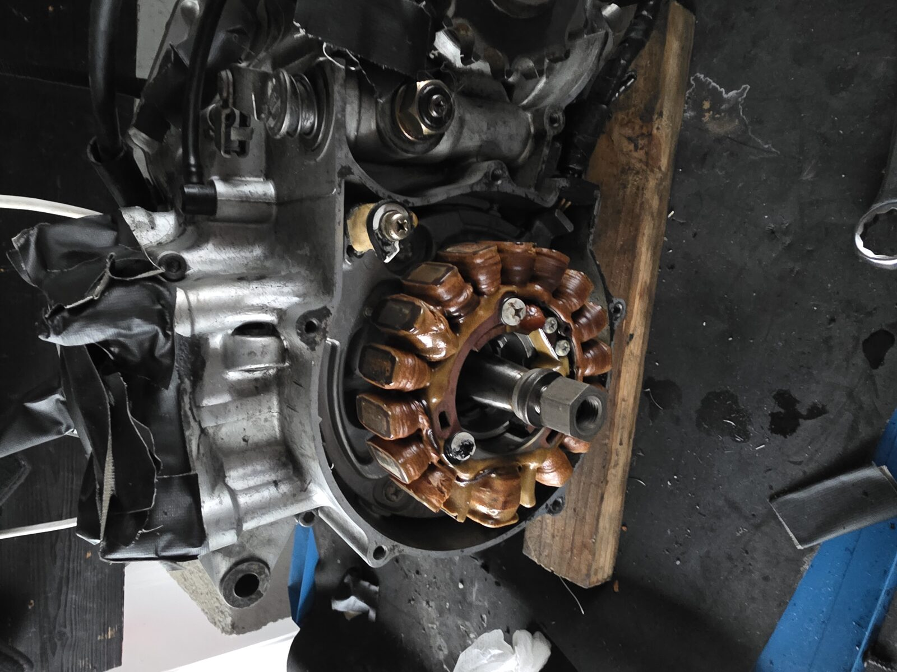
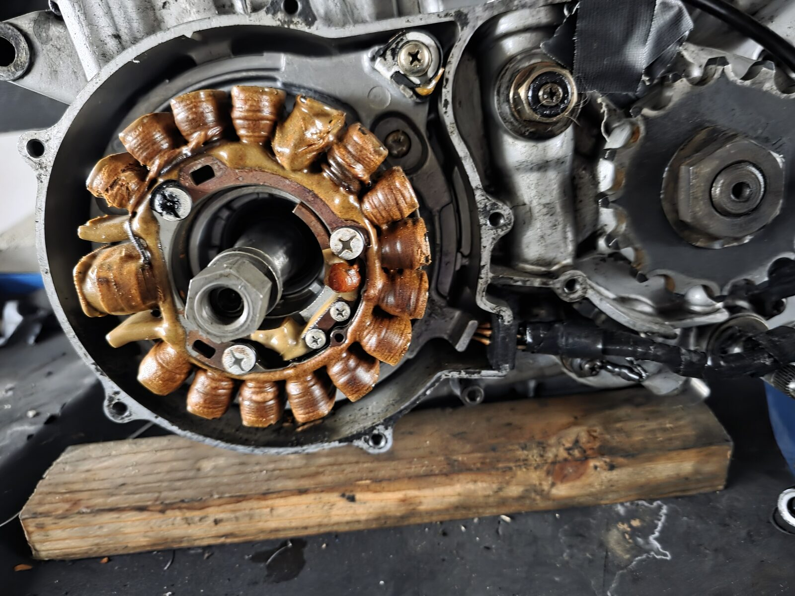
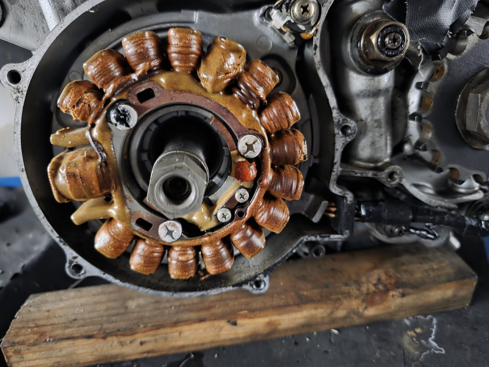

🎉 Svinghjulet er endelig av!
Svinghjulet har vært ukas store hinder. Det satt som støpt på veivtappen, og nektet å rikke seg uansett hvor mye moment avdrageren fikk. Men i dag slapp det endelig — og det gjorde godt.

💪 Hva som skulle til
Etter å ha prøvd det meste av moment alene, var det til slutt kombinasjonen av litt varme og en kraftig muttertrekker som fikk konusen til å slippe:
- Krypende olje på konusfugen mellom rotor og veivtapp — fikk trekke inn
- Avdrageren (M27×1,0 venstregjenger) skrudd helt i bunn og strammet
- Litt varme på svinghjulsnavet — fikk det til å utvide seg
- Kraftig muttertrekker på senterbolten — momentet og slagene sammen brøt konusen løs
Det er kombinasjonen av spenning, varme og muttertrekkerens slag som gjør jobben — ikke rå muskelkraft alene. Etter noen runder slapp den.
🔍 Veivtappen ser bra ut
Og det beste av alt: da rotoren først var av, viste veivtappen seg å være blank og fin. Ingen grader eller skader som må utbedres. Presis den gode nyheten man håper på når noe har sittet så hardt.

⚙️ Statoren kommer av
Med rotoren borte ligger også den gamle statoren med kobberspolene eksponert.


📈 Hva nå?
Dette åpner døren til det neste store steget: VAPE-tenningen. Den nye rotoren har sin egen avdrager (kun den skal brukes på den nye — VAPE er strenge på det), og den nye statoren erstatter den gamle. Veivtappen får en lett rengjøring og sjekk av konus og gjenger før ny rotor går på.
En skikkelig seier i dag. Nå venter tenninga! 🔧🏍️